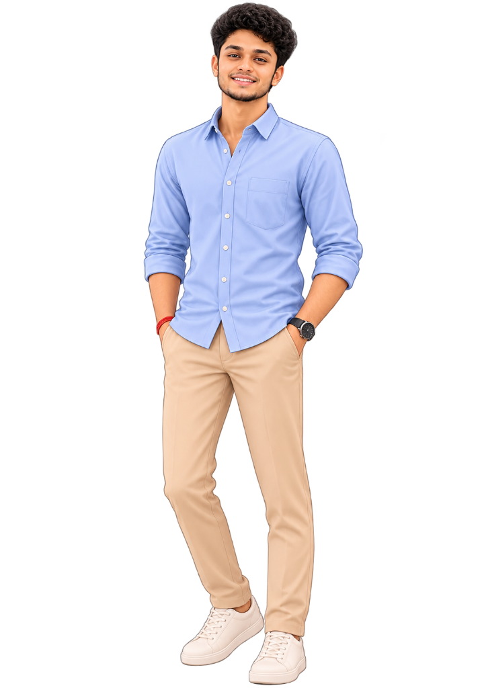

Hi, I'm Janmejay Tiwari.
Architecting Full-Stack Systems
with AI & Data-Driven Rigor.
I build responsive, end-to-end web applications and engineer practical data-driven solutions using modern full-stack architectures and machine learning techniques.
Responsive UI in React and Tailwind CSS backed by scalable Node.js, Express, and Java REST APIs.
Exploratory data analysis, statistical modeling, and machine learning using Python, Pandas, and Scikit-learn.
Solid grasp of Data Structures and Algorithms with systematic attention to time and space complexity.

Janmejay Tiwari
Full-Stack Developer • Data Science
Lucknow, India
Crafting robust software systems driven by data insight and engineering discipline.
I am a dedicated Full-Stack Developer currently pursuing my Bachelor of Technology in Computer Science & Engineering (Data Science) at Goel Institute of Technology & Management, Lucknow.
My software engineering journey focuses on building end-to-end web applications with modular architectures, combining React, Node.js, Express, and Java on the web stack with Python, Pandas, and Scikit-learn for predictive modeling and data exploration.
I bring a problem-solving mindset to every project — dissecting complex functional constraints, optimizing algorithmic efficiency, and building practical technology solutions designed to make an impact in agriculture, urban mobility, and land administration.
Comprehensive Skills Matrix
Organized across 6 distinct domains of full-stack engineering, programming languages, databases, data science, and developer toolchains.
Frontend
User Interface & Web- React Components
- JavaScript (ES6+) Proficient
- Tailwind CSS Modern UI
- HTML5 Semantic
- CSS3 Responsive
Backend
Server & Architecture- Node.js Runtime
- Express.js REST APIs
- Spring Boot Java Framework
- REST APIs Design & Auth
Programming Languages
Core Foundations- Java OOP & DSA
- Python Data Science
- JavaScript Full-Stack
- SQL Relational
Database
Persistence & Storage- MongoDB NoSQL & Mongoose
- MySQL Relational DB
- SQL Query Optimization
AI & Data Science
Machine Learning & Analysis- Python Analytics
- Pandas Data Wrangling
- NumPy Vector Arrays
- Scikit-learn Model Training
- Matplotlib Visualizations
Development Tools
Toolchain & Collaboration- Git Version Control
- GitHub Collaboration
- VS Code Primary IDE
- Postman API Testing
Featured Projects
Real-world engineering initiatives across smart agriculture, digital market access, predictive land governance, and urban transit.
Experience & Achievements
Verified technical competitions, software project builds, and academic coding initiatives.
Technical Hackathons & Innovation Contests
Spearheaded frontend and backend architecture for agritech prototypes (JALRAKSHAK, AgriFair) and urban logistics concepts under rapid 24-48 hour prototyping sprints. Collaborated on API design, schema structuring, and live solution pitches.
Full-Stack Project Engineering
Built full-stack web applications implementing responsive React user interfaces, modular Express/Node.js and Java backends, authenticated REST APIs, and database modeling with MongoDB and MySQL.
Coding Community & Technical Peer Collaboration
Active member of campus developer circles, engaging in algorithmic problem solving in Java, participating in coding challenges, and organizing peer study sessions on Data Science and Web Development.
Education
Verified academic degree and institutional credentials.
St. Aloysius High School
Mumbai, Maharashtra
Secondary school education establishing foundational analytical mathematics and core academic sciences.
Reckon Public Academy
Mumbai, Maharashtra
Higher secondary education in Science stream focusing on Physics, Chemistry, Mathematics, and Computer Science.
Goel Institute of Technology & Management
Lucknow, Uttar Pradesh
Undergraduate degree focusing on Data Structures & Algorithms, Java OOP, Full-Stack Web Systems, and Machine Learning.
St. Aloysius High School
Mumbai, Maharashtra
Foundational analytical mathematics, general sciences, and logical reasoning.
Reckon Public Academy
Mumbai, Maharashtra
Senior secondary education in Science stream focusing on Physics, Chemistry, Mathematics, and Computer Science.
Goel Institute of Technology & Management
Lucknow, Uttar Pradesh
Undergraduate degree focusing on DSA, Java OOP, Full-Stack Web Systems, and Machine Learning.